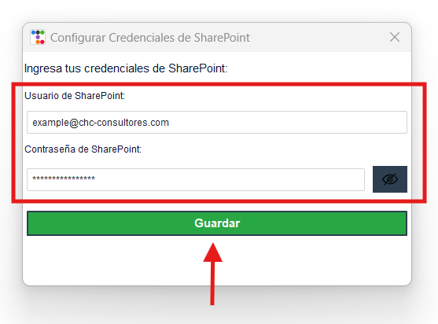

Pasos para el Usuario
-
Iniciar la Aplicación (Con Permisos de Administrador)
Inicie la aplicación con permisos de administrador para evitar limitaciones que puedan afectar su funcionalidad.
-
Seleccionar Proveedor de Dominio
Al iniciar la aplicación por primera vez, se abrirá una ventana donde podrá iniciar sesión con sus credenciales de Microsoft o Google según su preferencia. El correo ingresado será utilizado para enviar los correos electrónicos con los archivos adjuntos.
- Debe seleccionar la cuenta con la que desea envíar los correos.
- Una vez iniciada la sesión, aparecerá una ventana de confirmación que indicará si su cuenta fue autenticada exitosamente.
- Puede cerrar la ventana y continuar al siguiente paso.
-
Conectar con SharePoint
Después de autenticar su cuenta personal u organizacional, deberá configurar su cuenta de SharePoint en 'Configuración' > 'Cambiar correo de SharePoint'.
- Ingrese sus credenciales de SharePoint. La cuenta debe tener acceso directo al archivo fuente donde se obtendrán los datos de los clientes.
- Al guardar sus credenciales, aparecerá una ventana de confirmación si las credenciales son válidas.
- Puede cerrar la ventana y continuar.
-
Registrar Clientes
Antes de generar los reportes, es necesario registrar los clientes en la base de datos.
- Vaya al menú superior y seleccione 'Gestión' > 'Gestor de clientes'.
- Se abrirá una ventana con las herramientas necesarias para administrar sus clientes.
4.1 Clientes y Alias
- En la pestaña 'Todos los clientes', haga clic en 'Añadir cliente'.
- Complete el formulario con el nombre personalizado del cliente y el correo electrónico donde recibirá sus reportes.
- Nota: el alias debe ser el mismo valor que se encuentraen la columna 'Consignee' del archivo fuente para filtrar los datos del cliente específico.
- Seleccione el cliente y posteriormente seleccione la opcion 'Añadir Alias' .
- Ingrese el alias que desea filtrar para el cliente seleccionado y ha click en 'Guardar'.
- Nota: Puede agregar múltiples alias que se incluirán juntos en el archivo de Excel del cliente.
- Una vez guardado el cliente, puede continuar con el siguiente paso.

4.2 Listas de Clientes
- En la pestaña 'Por Lista', haga clic en 'Crear Lista'.
- Asigne un nombre a la lista, por ejemplo, 'Favoritos'.
- Seleccione la lista creada en el desplegable 'Seleccionar lista'.
- Agregue los clientes directamente a esta lista.
- Nota: Los clientes añadidos a esta lista aparecerán en 'Todos los clientes', lo que permitirá agregarlos a otras listas en el futuro.
- Para eliminar un cliente de una lista, selecciónelo y haga clic en 'Eliminar de lista'. Luego, puede reasignarlo a la lista correcta desde 'Todos los clientes'.
- Nota Importante: Eliminar un cliente de la lista con la opción 'Borrar cliente' lo removerá de todas las listas y de la base de datos de forma irreversible. Deberá registrar el cliente nuevamente si lo elimina.

-
Generar Reportes
Con los clientes registrados, diríjase a la ventana principal y haga clic en 'Generar Reportes'.
- Este proceso descargará el archivo Excel desde SharePoint, actualizará la información con los datos más recientes y filtrará los datos por cliente, generando documentos Excel individuales para cada uno.
- Al finalizar, aparecerá el mensaje "Reportes generados!"
-
Enviar Reportes
Si la generación de reportes fue exitosa, puede proceder a enviarlos.

- Haga clic en 'Enviar Correos'.
- Seleccione la lista de clientes a los que desea enviar los reportes y confirme la acción.
- Espere a que se envíen los correos y verifique que aparezca el mensaje "Reportes enviados exitosamente!"
- ¡Listo! El flujo del programa habrá finalizado.
Notas Importantes
Cada vez que registre un nuevo cliente, debe generar los reportes nuevamente antes de enviarlos.
Respaldo de Clientes
-
Exportar Clientes
Para mantener una copia de seguridad de la base de datos de clientes:
- Vaya a 'Gestión' > 'Exportar clientes (JSON)'.
- Seleccione la ruta y el nombre para guardar el respaldo, por ejemplo, 'Respaldo_Clientes.json'.
- Guarde el archivo en un lugar seguro para futuras recuperaciones.
-
Importar Clientes
Para importar una base de datos de clientes existente:
- Vaya a 'Gestión' > 'Importar Clientes (JSON)'.
- Seleccione el archivo de respaldo y espere a que la carga finalice.
- Nota: Si existen clientes con el mismo nombre o alias, el programa fusionará los registros para evitar duplicados. Se recomienda realizar un respaldo antes de importar una nueva base de datos.
Administrar Clientes y Listas
-
Clientes y Alias
En 'Gestión' > 'Gestor de clientes', encontrará opciones como 'Añadir cliente', 'Modificar Cliente', 'Borrar cliente', 'Añadir alias' y 'Borrar alias' para mantener el control y orden de su base de datos. Estas opciones están disponibles en las pestañas 'Por Lista' y 'Todos los clientes'.
-
Listas
En la misma ventana, podrá gestionar listas de clientes con opciones como 'Crear Lista', 'Eliminar Lista', 'Añadir a lista' y 'Eliminar de lista'. Estas opciones están disponibles en las pestañas 'Por Lista' y 'Todos los clientes' (excepto 'Eliminar de Lista' en esta última).

Configuración de Cuentas
-
Cuenta de Origen para Envío de Correos
Para cambiar la cuenta desde la cual se envían los correos:
- Vaya a 'Configuración' > 'Cambiar correo de origen'.
- En la ventana de configuración, haga clic en 'Cerrar sesión' si ya tiene una cuenta autenticada.
- Repita los pasos del punto 2 de este manual.

-
Cuenta de SharePoint
Para cambiar la cuenta de SharePoint:
- Vaya a 'Configuración' > 'Cambiar cuenta de SharePoint'.
- Ingrese las nuevas credenciales y guárdelas. 
- Verifique que aparezca una ventana de confirmación si las credenciales son correctas.
Información Importante
-
Políticas de Privacidad y Términos de Uso
Para consultar las políticas y términos de uso de esta aplicación:
- Vaya a 'Ayuda' > 'Acerca de'.
- Haga clic en 'Políticas de privacidad y Términos de uso' para visualizar los documentos correspondientes.
-
Manual de Usuario
En la misma ventana de 'Acerca de', encontrará la opción 'Manual de usuario', donde podrá consultar este documento cuando lo desee.